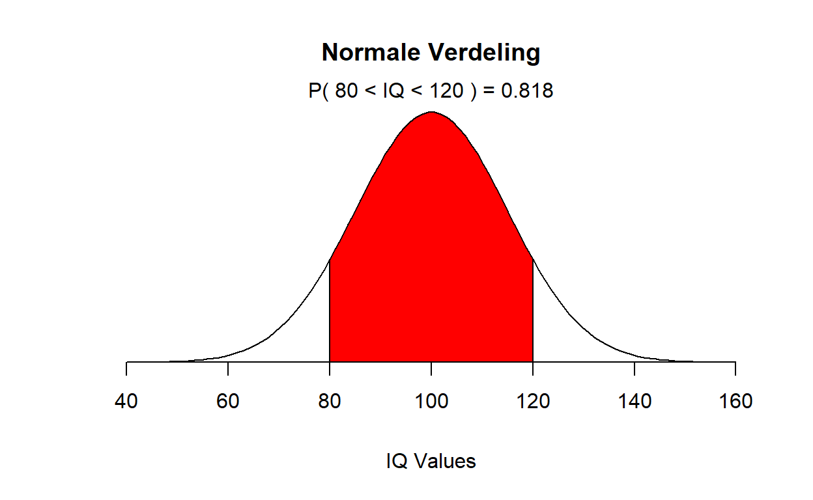
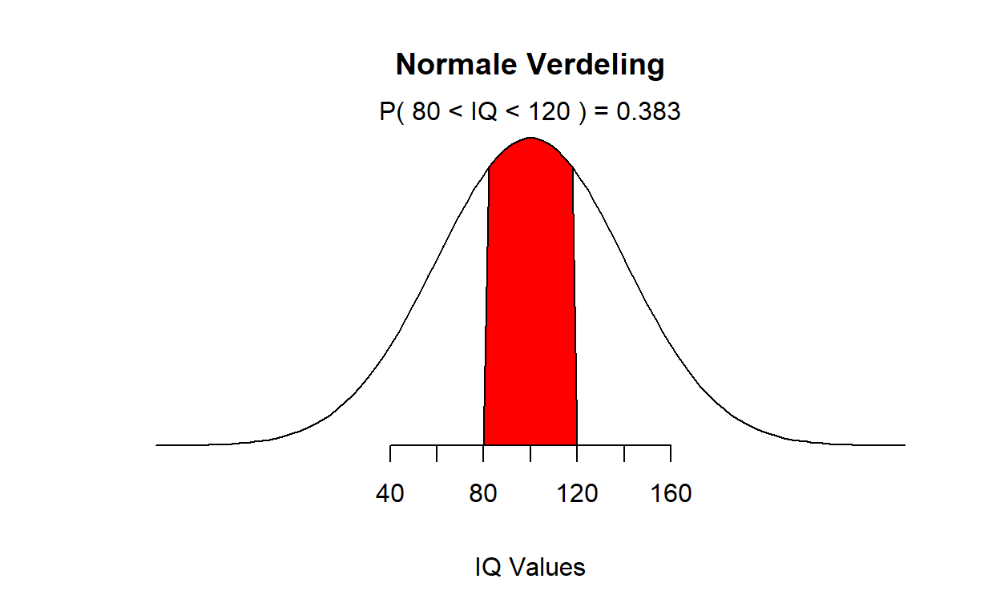
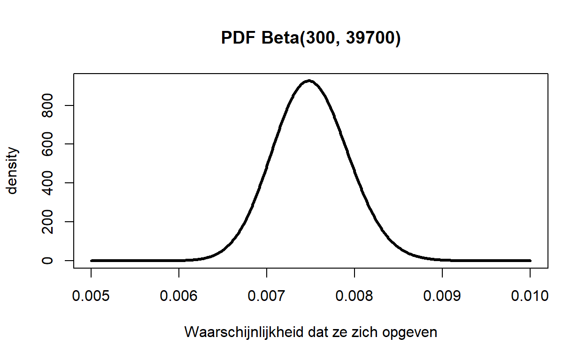

Over statistiek en waarschijnlijkheid op de eenvoudige manier.
Ons leven zit vol onzekerheid, schrijft Will Kurt in zijn nieuwe boek Bayesian statistics the fun away. Understanding statistics and probability with Star Wars, Lego, and Rubber Ducks. Veel gebeurt zoals we ons van te voren hebben bedacht, andere zaken lopen toch weer net een beetje anders. Om met de werkelijkheid om te gaan moeten we wel een gevoel hebben bij het omgaan met onzekerheid in bepaalde situaties. Als we dat systematische willen doen, kan de Bayesiaanse statistiek ons een handje helpen. Het leert ons logisch denken en we kunnen het ook nog mathematisch uitdrukken. Will Kurt helpt mensen bij het omgaan met onzekerheid. De boeken die over Bayesiaanse statistiek zijn geschreven zijn vaak moeilijk, zeker als het een nieuw onderwerp is voor je. De standaardboeken over dit onderwerp, van Gelman, McElreath of Spiegelhalter bijvoorbeeld, zijn vooral weggelegd voor een kleine groep statistisch onderlegde lezers. Kurt heeft een boek voor iedereen voor ogen. Bayesiaanse statistiek zet hij tegenover frequentistische statistiek. Bij frequentische statistiek heeft waarschijnlijkheid met frequentie te maken, bij Bayesiaanse statistiek gaat het om de vraag hoe onzeker we zijn over de informatie waarover we beschikken. Bij Bayesiaanse statistiek beschrijven we zo nauwkeurig mogelijk hoe onzeker we over zaken zijn en gebruiken daarbij specifieke gereedschappen. Hier kijken naar een probleem, lossen we het logisch op, gebruiken bepaalde regels, drukken het mathematisch uit en kijken we vervolgens weer opnieuw naar het probleem. Het boek deelt hij in vier stukken op.
In het eerste deel laat Kurt ons Bayesiaans denken en alledaags redeneren. Hier introduceert hij Bayesiaans denken en geeft er een overzicht van. Hij laat zien dat Bayesiaans denken heel dicht bij gewoon denken en de dagelijkse problemen ligt. Het is niet anders dan het observeren van data, het formuleren van een hypothese en dan weer het updaten van wat je denkt op basis van de data. Om de wereld te begrijpen, kun je vertrouwen op wat je ziet en de hypothesen die je erover hebt. Met nieuwe gegevens kun je de hypothese aanpassen, waarna je vervolgens beter met de data om kunt gaan. Onzekerheid is te meten en in getallen om te zetten. Iets is weinig of zeer waarschijnlijk en dat kunnen we in mathematische modellen omzetten. Iets wat dichter bij 0 ligt, is waarschijnlijk niet waar en iets dat dicht bij 1 ligt is dat wel. Iets kan niet waar en onwaar tegelijk zijn. \(P(X) + P_n(X)=1\) Om te rekenen met waarschijnlijkheid waarin we geloven, moeten we kunnen zeggen hoeveel keer meer we in een bepaalde hypothese geloven dan in een andere hypothese. Daarvoor moeten we met logica kunnen werken en dan zijn drie operators belangrijk: EN, OF, NIET, zoals in de volgende stelling: Ik heb een paraplu nodig als het regent EN ik naar buiten ga of Als het niet regent OF als ik NIET naar buiten ga, heb ik een paraplu NIET nodig. Wat ook belangrijk is, hoe je verschillende waarschijnlijkheden combineert. Als de uitkomsten niet met elkaar te maken hebben (bv. de kans op een kop van een munt en een zes van de dobbelstaan) is \(P(A,B)=P(A)*P(B)\). In dat voorbeeld gaat het wel om zaken die elkaar uitsluiten en dat is niet altijd het geval. Je kunt geen kop en een munt gooien EN ook niet een zes en een twee met de dobbelsteen. Maar het wordt anders bij een kop van de munt gooien OF een zes met de dobbelsteen. Dan moeten we alle waarschijnlijkheden optellen en dan de waarschijnlijkheid dat beide tegelijk gebeuren, eraf trekken of te wel: \(P(A) OR P(B)=P(A)+P(B)-P(A,B)\) of, zoals in dit voorbeeld: \[P(kop) OR P(zes)=P(kop,zes)=1/2+1/6-1/12=7/12\] Het eerste voorbeeld van een mathematisch model dat Kurt geeft, is een binomiale verdeling, waarmee je bepaalde successen in de uitkomst kunt onderzoeken. Bij deze uitkomstmaat heeft iets succes of niet (twee uitkomsten, vandaar: bi).
k Is het aantal uitkomsten waar het ons om gaat (bv. k=2, 2 keer kop van de munt)
n is het totale aantal (bv. n=3, het aantal keren dat een munt wordt opgegeooid)
p is de waarschijnlijkheid dat iets gebeurt.(p=1/2, de waarschijnlijkheid op het gooien van een munt)
Uitgedrukt als \(B(2; 3;1/2)\), waarbij de B de binomiale verdeling is.
De tweede verdeling die hij ons geeft is de Beta verdeling, een continue verdeling. Deze gebruik je als je een aantal keren iets hebt geobserveerd en het aantal succesvolle uitkomsten weet, bv. je hebt 41 keer gegooid en je hebt 14x kop gegooid en 27 keer munt. Hier gaat het om \(alpha,beta,p\). Hierbij is
p de waarschijnlijkheid dat iets gebeurt
a de keren dat het ook echt gebeurt
b de keren dat het niet gebeurt
Bayes is vooral interessant bij conditionele waarschijnlijkheid, het ene heeft wel degelijk invloed op het andere, daar gaat het om in het tweede deel. Juist hier is Bayes interessant. Conditionele waarschijnlijkheid drukken we uit als \(P(A|B)\), de waarschijnlijkheid van A gegeven B. Dit is belangrijk omdat hier de aanvullende informatie ons geloof in iets beinvloedt. Hij geeft het voorbeeld van kleurenblindheid:
P(kleurenblindheid)=0.00425
P(kleurenblindheid|vrouw)=0.0005
P(kleurenblindheid|man)=0.08
Als je de kans wilt weten op kleurenblindheid van een man, dan is dat: P(man| kleurenblindheid)=P(man) x P(kleurenblindheid|man) 0.5X0.08=0.04.Dit kunnen we ook omdraaien. Ingewikkelder is de vraag: wat is de kans dat de persoon man is gegeven dat je weet dat er sprake is van kleurenblindheid (P(man|kleurenblindheid)=?)
\[ P(man|kleurenblind)={\frac{P(man)P(kleurenblind|man)}{P(kleurenblind)}}=0.5X0.08/0.0425=0.941 \]
Hiervoor is de Bayesiaanse wet geintroduceerd die zo goed en makkelijk te gebruiken is:
\[ P(A,B)={\frac{P(A)P(B|A)}{P(B)}} \] Met deze Bayesiaanse wet nemen we onze kijk op de werkelijkheid en ons geloof daarin als uitgangspunt. Hier combineren data en transformeren dit in een schatting van onze nieuwe kijk gegeven hetgeen we hebben geobserveerd. Met Bayes nemen we deze overtuiging en kwantificeren exact hoe sterk dit bewijs ons denken verandert. Met lego stukje laat Kurt heel concreet zien hoe dit werkt, zoals hij steeds in het boek eenvoudige voorbeelden neemt om duidelijk te maken wat hij bedoelt. Met Bayes heb je drie delen: de prior P(H), de hypothes oftewel hoe de manier waarop we naar de werkelijkheid kijken; de likelihood P(D|H), de data gegeven onze hypothese en de posterior, wat we eigenlijk willen weten: P(H|D), de hypothese gegeven de data die we hebben, de theorie die we op basis van de gegevens opstellen. Deze delen maken tezamen vormen het theorema van Bayes. De prior is natuurlijk het meest controversiele deel van deze wet. Hier gebruiken we de informatie die we al hebben in het schatten van een onzekere situatie. Ook bij de prior gebruik je niet één bepaalde waarde maar vaak ook een verdeling van waarden. Juist om verschillende mogelijkheden mee te kunnen nemen in jouw berekening.
In het derde deel van het boek gaat hij in op het schatten van parameters. Hij begint met het gemiddelde en dat we dat meten door alle observaties te wegen door de waarschijnlijkheid dat deze observaties voorkomen. Hier is niet veel nieuws onder de zon, behalve dat je wel goed moet weten waar je het over hebt. Datzelfde geldt voor het meten van de spreiding van de data waar hij ook over schrijft. Hij laat zien dat er drie manieren zijn om de spreiding in kaart te brengen: MAD (Mean Absolute Deviation), Variantie en de Standaard Deviatie waar het meest mee gewerkt wordt. Het is goed om niet alleen gemiddelden te kennen maar ook uitspraken te doen over de spreiding omdat deze meestal aangeven hoe zeker of onzeker we over iets zijn. Hoe groter de spreiding, hoe onzekerder we zijn en andersom. In de normale verdeling is de spreiding ook uitgedrukt in standaard deviatie. Hieronder zien we een normale verdeling met een standaard deviatie van 15, relatief veel zekerheid.

En hier onder een normaal verdeling met standaard deviatie 40, relatief veel onzekerheid.

65 procent van de mogelijke waarden vallen binnen ongeveer een standaardeviatie, 95 procent binnen twee standaarddeviaties en 99.7 procent binnen drie standaard deviatie. Interessanter hier zijn de gereedschappen om de parameters te schatten op een Bayesiaanse manier. Kurt presenteert drie functies en ik hou even de Engelse termen aan: de Probability Density Function (PDF), die ons laat zien hoeveel iets voorkomt. Kurt geeft een voorbeeld. Hij start een email lijst waar je je voor kunt inschrijven. Hij stuurt 40.000 mails uit en 300 mensen geven zich op. Dit kan in een beta-functie worden uitgedrukt

De Cumulative Distribution Function (CDF) die ons helpt om de waarschijnlijkheid van bepaalde waardes vast te stellen. R geeft ons daar ook het instrumentarium voor. Als we in R de waarschijnlijkheid van Beta(300, 39700) vast willen stellen, uitgaande van kleiner dan 0.0065, kunnen we dat met de volgende formule uitdrukken.
[1] 0.007978686En om vast te stellen dat de bevestigingsgraad meer is dan 0.0085 is, schrijven we het volgende:
[1] 0.01248151Het maakt niet uit of het continu is zoals hierboven of discreet zoals hieronder:
[1] 0.8125Om bepaalde waarden vast te stellen kunnen we de Kwantielen Functie gebruiken, bv. de mediaan en het interval dat er bij hoort. Of als we de waarde van 99,9 procent en minder willen hebben kunnen we de volgende functie gebruiken. We weten hier voor 99,9 procent zeker dat minder dan 0.0089 zich opgeven voor onze lijst.
[1] 0.008903462En ook, weten we voor 95 procent zeker dat tussen de 0.67 procent en 0.84 procent van de mensen zich opgeeft voor de lijst. Dat onderzoeken we op de volgende wijze:
[1] 0.006678074
[1] 0.008368562Op deze manier kunnen we parameters en intervallen berekenen die met onze waarden samenhangen. Die schattingen kunnen we ook maken door informatie toe te voegen. We hebben dan niet alleen de data (300, 39700) maar gebruiken ook kennis die we hebben. Dan kunnen we verschillende prior gebruiken die onze kennis uitdrukken. Bijvoorbeeld als we pessimistisch zijn kunnen we de Beta(1,41) gebruiken en die veronderstelt vooral lage waarden of Beta(5,200) als we iets meer geloof in verandering hebben. Of als we niks weten de Beta(1,1). Maar ook als is jouw prior verkeerd, deze wordt door data overruled en zeker als je veel data hebt. Het is jammer dat Kurt niet eenvoudig laat zien hoe je dat doet. Kun je er bij optellen.
Het laatste, vierde deel gaat over de kern van statistiek: het testen van hypothesen. Hij begint met een simpele A/B test, een test om vast te stellen of het ene beter werkt dan het andere. Ook hier laat hij zien hoe je dat kunt doen en hoe je daar simulaties bij kunt gebruiken. De ene groep van 150 ontvangt een email met een grote illustratie erop en de andere niet. Hij wil weten welke groep zich op basis van de email vaker opgeeft
| Variant | Geklikt | Niet geklikt | Opgegeven |
|---|---|---|---|
| VariantA | 36 | 114 | 0.24 |
| Variant B | 50 | 100 | 0.33 |
We weten uit eerder onderzoek dat 3 van 10 mensen zich opgeven en die kennis verwerken we in de prior.
[1] 0.95954Bij 100.000 pogingen was variant B 96 procent beter.
In dit hoofdstuk presenteert hij ook twee maten: de Bayes Factor and Posterior Odds. Als we twee hypothesen met elkaar willen vergelijken dan vergelijken we in elk geval de prior maal de likelihood en dan krijgen we de ratio van de posteriors als volgt:
\[ {\frac{P(H_1)*(P(D|H_1)}{P(H_2)*(P(D|H_2)}} \] Dit vergelijkt hoe elke hypothese de data verklaart die we observeren. Stel dat we uitgaan van dezelfde prior houden we het volgende over: \[ {\frac{(P(D|H_1)}{(P(D|H_2)}} \] Dit is de Bayes factor die we dan overhouden, de ratio tussen de likelihoods van twee hypothesen. Is het meer dan 1, dan is hypothese_1 (H_1) beter, is het kleiner dan 1 dan is H_2 beter. De Prior Odds is de ratio van de waarschijnlijkheid voordat we naar de data hebben gekeken \({\frac{P(H_1)}{P(H_2)}}\). Als we de Bayes Factor en de Prior Odds samen nemen krijven we de posterior odds: \[posterior odds=O(H_1){\frac{P(D|H_1)}{P(D|H_2)}}\]
En dan is het handig om de volgende regels in het achterhoofd te houden:
| Posterior odds | Sterkte van het bewijs |
|---|---|
| 1-3 | Interessant, geen conclusies |
| 3-20 | Het echt ergens op lijken |
| 20-150 | Sterk bewijs ten faveure H1 |
| >150 | Overweldigend bewijs |
Hij geeft enkele voorbeelden waaronder deze: Stel je wordt op een ochtend wakker en je hebt problemen met horen en een ringtoon (tinnitus) in je oor. Er zijn twee mogelijkheden, twee hypothesen: - Vestibular swannoma en je hebt een tumor die tot oorproblemen leidt (H_1). Hoorproblemen zijn hier 94% en tinnitus is hier 89%: \(P(D|H1)=0.94*0.89=0.78\) - Oorsmeer en je oor moet worden uitgespoten (H_2). Hier geldt voor de complicaties: \(P(D|H1)=0.63*0.55=0.35\) en de Bayes Factor wordt dan: \[ {\frac{(P(D|H_1)}{(P(D|H_2)}}={\frac{0.78}{0.35}}=2.23 \] Het lijkt de kans op te gaan van vestibular swannoma maar dat kan niet echt geconcludeerd worden. Maar hier kunnen we er niet vanuit gaan dat de prior in beide geval even groot is. De kans op de tumor is \[P(H_1)={\frac{11}{1,000,000}}\]
En de kans op gewoon oorsmeer is \[P(H_2)={\frac{37,000}{1,000,000}}\]
De Odds Priors is dan \[O(H_1)={\frac{P(H_1)}{P(H_2)}}={\frac{11}{37,000}}\]
Als we nu rekening houden met deze voorkennis en dit met de Bayes Factor vermenigvuldigen krijgen we het volgende resultaat:
\[ O(H_1*{\frac{(P(D|H_1)}{(P(D|H_2)}}={\frac{11}{37,000}}*2.23={\frac{223}{370,000}} \]
Het is 1,659 meer waarschijnlijk dat het met jouw oorsmeer te maken heeft en dat je het best naar de huisarts kunt gaan. En zo werkt hij dit concept in dit hoofdstuk verder uit en krijg je een goed idee wat die Bayes’ basis jou op kan leveren. Soms is het goed om weer terug te grijpen op de basis van een heel goed instrumentarium en Kurt kan jou als lezer heel goed vertellen hoe die basis eruit ziet.
Kurt, W. (2019). Bayesian statistics the fun way. Understanding statistics and probability with Star Wars, Lego, and Rubber Ducks. San Francisco: No Starch Press.